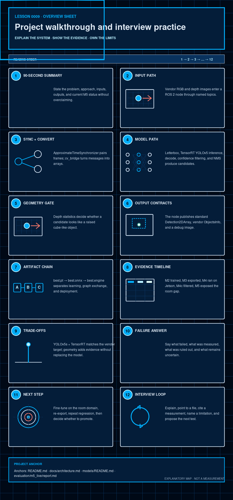

Software · AI · Robotics / Learning system
Lesson 0009 — Project walkthrough and interview practice
The final lesson is a rehearsal: explain the complete data path, cite the evidence, defend the trade-offs, and state the current limitation and next reversible experiment.
How to use this lesson
Read the explanation, inspect the visual, make a prediction, and then compare it with the repository evidence. The goal is a model of this project that you can explain—not a list of framework slogans.
Prerequisites and scope
This is the synthesis lesson. Complete Lessons 0001–0008 first, or follow the links in each section when a term is unfamiliar. You are not expected to memorize line numbers; you are expected to distinguish contracts, evidence, inference, and uncertainty.
Learning objectives
By the end, you should be able to explain the system at three levels of detail, trace one frame across every boundary, distinguish a model result from a system result, attach conditions and denominators to measurements, defend a trade-off, state an unknown without guessing, and propose a test whose outcome would change your conclusion.

The question this lesson answers
Can you explain the complete colored-cube system, its trade-offs, its failures, and its next step as an engineer? This final lesson is a walkthrough and a rehearsal. The strongest answer is not “the model works”; it is a short, evidence-backed chain from camera input to current limitation.
Interview rule
Separate implemented, measured, planned, and unknown. That vocabulary makes the explanation trustworthy.
A reliable answer shape
Use four moves: claim what you think is true; name the evidence and its scope; state the remaining uncertainty; propose the smallest next test that could distinguish competing explanations. “I do not know yet” is a strong engineering answer when followed by an observable test.
| Word | What it permits you to say |
|---|---|
| Implemented | The code or configuration exists; it may still be untested. |
| Verified | A named check passed under named conditions. |
| Measured | A number was observed with a stated unit, denominator, artifact, and dataset or bag. |
| Inferred | The evidence supports an explanation, but alternatives remain. |
| Planned | A future action is documented; no outcome exists yet. |
| Unknown | The current evidence cannot decide; name the next discriminating observation. |
1. The 90-second project summary
“This project detects red_cube, green_cube, and blue_cube from a HiWonder JetRover camera. A ROS 2 node synchronizes RGB and depth, preprocesses the RGB frame for a YOLOv5s TensorRT FP16 engine, decodes and filters candidates, checks depth geometry, and publishes standard and vendor-compatible outputs plus a debug image. The model artifact chain is best.pt → best.onnx → best.engine. M5 is PARTIAL: the node and empty-scene rejection run, but the current model does not reliably propose the room cubes at confidence 0.50. The next planned intervention is positive-domain fine-tuning followed by the same regression gates.”
This summary is intentionally compact. The following sections give you the evidence needed when an interviewer asks “how?” or “what failed?”
Use progressive disclosure
Start with a one-sentence purpose, continue with the 90-second architecture and status, and expand only where the listener asks. A strong explanation is not the longest possible explanation; it is the shortest one that preserves the important boundaries and can be expanded without contradiction.
2. Whiteboard the runtime path
Use this order when explaining the system. It keeps data, computation, and contracts visible.
Trace one concrete frame, not just component names: a timestamped RGB message and nearby depth message are paired; RGB pixels are converted and letterboxed; the engine emits a dense tensor; confidence filtering and NMS reduce it to boxes; padding is undone; depth statistics may reject a box; then the surviving data is adapted into ROS messages. At each arrow ask, “What representation crosses this boundary, and what information could be lost or changed?”
Model versus system
The detector is one subsystem. A model can produce a good box while synchronization, coordinate reversal, depth filtering, or publication later removes or corrupts it. Conversely, a healthy ROS message rate proves the pipeline is alive, not that the boxes are correct. System evaluation must localize both kinds of failure.
3. Name the real input and output contracts
| Role | Current contract |
|---|---|
| RGB input | /depth_cam/rgb/image_raw, sensor_msgs/Image |
| Depth input | /depth_cam/depth/image_raw, sensor_msgs/Image |
| Camera info | /depth_cam/rgb/camera_info, intrinsics update |
| Standard output | /cube_detections, vision_msgs/Detection2DArray |
| Vendor output | /cube_detections/vendor_objects, interfaces/ObjectsInfo |
| Debug output | /cube_detections/debug_image, annotated sensor_msgs/Image |
Class-ID caution: the current model and node use 0=blue_cube, 1=green_cube, 2=red_cube, but docs/project-definition.md still documents another order. Call out and reconcile this before interpreting a class index or training again.
A contract includes more than a type name. For images it also includes width, height, encoding, timestamp, frame identity, and coordinate convention; for tensors it includes shape, axis meaning, dtype, units, and preprocessing; for detections it includes class mapping, score meaning, box coordinates, and whether an empty message is valid. Type-compatible data can still be semantically wrong.
4. Describe what the model does—and what it does not do
The node's _letterbox() prepares a square model input. _infer() runs the TensorRT engine and calls _decode_yolov5_output(). The current export emits [1,7,8400]: one image, seven fields, and 8,400 candidate positions. The decoder transposes it into candidate rows, takes the best of three class scores, removes rows below the confidence threshold, converts center/size boxes to corners, reverses padding, and applies per-class NMS. This produces a much smaller set of detections in the original RGB frame.
The model does not itself publish ROS messages, estimate floor depth, or prove that a confidence score is true. Those responsibilities belong to the node and geometry/output stages.
5. Explain the depth gate precisely
compute_geometry() estimates a local reference depth from a surrounding annulus, applies the literal depth > floor + threshold selection, estimates that subset's extent using intrinsics, and measures aspect ratio and depth spread. decide() returns a verdict and reason. Missing or sparse per-box depth is kept with a low-quality reason; sufficient statistics can reject as flat, aspect, or non-planar. The filter is a post-filter, not a replacement detector, and its current selection sign is physically reversed for z-depth, the distance measured along the camera's optical axis.
Say both the intention and the implementation: the intended idea is that a cube top is raised relative to nearby floor, but in camera z-depth a nearer raised surface normally has a smaller value. The current greater-than predicate selects farther pixels instead. This is a confirmed semantic defect in the present code, so historical KEEP/REJECT counts verify reproducibility of that code path—not physical correctness.
6. Explain the artifact chain
best.pt
PyTorch/Ultralytics checkpoint used for learning and export.
best.onnx
Static exchange graph checked and exercised with ONNX Runtime.
best.engine
TensorRT FP16 artifact built for the Jetson runtime.
A change at the first boundary requires verification at every later boundary. The engine is not just a renamed checkpoint.
7. Tell the evidence timeline
| Stage | Evidence-backed statement |
|---|---|
| M2 | best.pt trained; validation mAP@0.5 0.954 on 9 images/21 instances. |
| M3 | best.onnx exported and checked; output shape [1,7,8400]. |
| M4/M4b | TensorRT engine loaded; each predicted class ID appeared in every frame of the saved 30-frame camera set. This is frame-hit coverage, not ground-truth accuracy. |
| M4c1 | Current filter removed the named distractor candidates; real-blue preservation was partial; the physical predicate is not validated. |
| M5 | Live node ran; empty scene kept 0; cubes at conf 0.50 kept 0; verdict PARTIAL. |
Notice the scope attached to every number. “0.954” is not universal accuracy: it is mAP@0.5 on a small named validation split. “Every frame” is not object recall without labels and one-to-one matching. “0 keeps” on an empty bag is encouraging for that scene but does not establish a general false-positive rate. Measurements become trustworthy explanations only when their artifact, inputs, conditions, metric, and denominator travel with them.
8. Defend the main trade-offs
- YOLOv5u-style model + TensorRT: the checkpoint uses the anchor-free Ultralytics head while the project keeps “YOLOv5s” as shorthand; ONNX is the portable boundary and the engine is Jetson-oriented.
- Depth geometry: is intended to add a shape/elevation check for candidates, but its current
depth > floor + thresholdpredicate has the wrong sign for z-depth and must not be presented as validated height reasoning. - Approximate sync: accepts nearby RGB/depth timestamps using a 50 ms slop rather than demanding exact equality.
- Vendor boundary: consumes vendor topics/contracts but does not modify vendor packages or the boot service.
- Read-only evidence: keeps evaluation separate from irreversible promotion or physical actuation.
A trade-off answer should name both benefits and costs. For example, a static 640×640 engine makes deployment predictable and efficient, but fixes the input contract and may lose small-object detail compared with a larger input. Approximate synchronization increases the chance of receiving pairs, but moving objects can shift between the two timestamps. A lower confidence threshold can recover weak cubes, but also admits more false candidates. Defending a choice means showing why its cost is acceptable for the measured operating conditions—not claiming that it has no cost.
9. Answer the failure question
“Why does it fail?” A disciplined answer is: validation and earlier saved-camera results show the artifacts can run, while M5's live room distribution differs. At confidence 0.50, the sticker-off cubes bag produced 0 kept detections across 460 output messages; at 0.25 only two green keeps appeared across 439 messages. Candidate logs make a positive-detection/domain-gap hypothesis plausible, and geometry cannot create a missing candidate. However, these counts are not ground-truth accuracy, the geometry predicate has a confirmed depth-sign defect, and the evidence does not prove the model is the only cause or rule out every ROS/preprocessing issue. The responsible next step is a controlled experiment across those boundaries. [M5 evidence · artifact evidence]


keep=0.Do not jump from correlation to cause
The live room differs from the training/validation data and the detector misses cubes there, so domain shift is a strong hypothesis. That pattern alone does not prove causation. A decisive investigation compares raw engine outputs across controlled preprocessing and scenes, then counts what each downstream filter removes. Keep alternative hypotheses alive until the observation distinguishes them.
10. Practice follow-up questions
Interactive: reveal the shape of a strong answer
Start with the data contract: topic names, message types, and the synchronized RGB/depth pair.
The “80-frame” plan itself contains conflicting totals and must be reconciled before collection, as Lesson 0008 explains. In an interview, saying this does not weaken the project; it demonstrates that you can distinguish a proposed direction from an executable experimental specification.
Self-check rubric
A strong answer names the input/output contract, traces the stages in order, separates general concepts from this artifact's numbers, gives at least one measured result with its test conditions, names one limitation without exaggeration, and ends with a reversible test. A weak answer relies on “AI magic,” treats confidence as truth, calls keep counts accuracy, or presents a plan as completed evidence.
11. Check your understanding
| Common shortcut | More accurate statement |
|---|---|
| “8400 detections” | 8400 candidate positions before confidence, NMS, and optional geometry filtering. |
| “0.90 means 90% correct” | A learned score whose real reliability must be measured on representative labelled data. |
| “Validation was 95.4% accurate” | mAP@0.5 was 0.954 on a named 9-image validation split. |
| “TensorRT improved the model” | TensorRT changed execution; behavior and speed require separate verification. |
| “Depth detects cubes” | Depth post-filters boxes that YOLO already proposed. |
What makes the 90-second summary strong?
What is the current engineering verdict?
What is the responsible next step?
Which statement is the most defensible?
12. Tiny exercise: record your own walkthrough
- Set a timer for 90 seconds.
- Explain the system using the pipeline diagram and the project summary, without reading the prose.
- Answer “what failed?” with at least two exact M5 measurements.
- Answer “what next?” with the planned intervention and the rollback boundary.
- Then give a five-minute version that traces one frame and labels every major statement as implemented, measured, inferred, planned, or unknown.
Observable result: a recording or written transcript that contains the inputs, artifact chain, geometry role, outputs, M5 PARTIAL verdict, and next experiment. Use the rubric below to self-check.
Data
Can you name the topics and message types?
Evidence
Can you cite counts without turning them into guesses?
Boundaries
Can you say what is planned or still unknown?
13. Explain it back
Final explain-back: “Walk a technically skeptical interviewer from a JetRover image to the current M5 verdict. Explain where the model, ROS 2, TensorRT, depth geometry, and evaluation each contribute—and where each cannot help.”
Finish with one reversible next step.
What this lesson intentionally postpones
This lesson intentionally postpones robot manipulation, navigation, architecture swaps, detailed neural-network mathematics, the actual fine-tuning run, and repair of the geometry predicate. Those are not missing implied successes: they are separate implementation and experiment tasks. The goal here is an honest systems explanation grounded in the current repository.
Primary references and next lesson
- Ultralytics YOLOv5 documentation — model-family and YOLOv5u architecture context.
- ROS REP-118: Depth Images — the depth convention needed to explain the geometry defect honestly.
- COCO detection evaluation — why keep counts without ground-truth matching are not accuracy.
- Project README and the linked canonical documentation.
- Curriculum plan — scope, teaching contract, and project truth.
- Return to Lesson 0001 for a foundations refresher, or review the full curriculum plan.